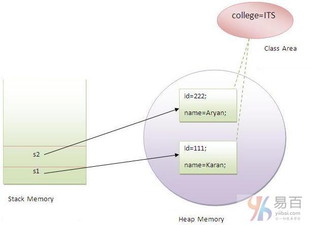

☰ 目录
20180427 static 关键字
1- 静态(static)可以是：
- 变量(也称为类变量)
- 方法(也称为类方法)
- 代码块
- 嵌套类
静态变量：使程序存储器高效（节省内存）
原文：https://www.yiibai.com/java/static-keyword-in-java.html
java中的static关键字主要用于内存管理。我们可以应用java static关键字在变量，方法，块和嵌套类中。 static关键字属于类，而不是类的实例。
静态(static)可以是：
- 变量(也称为类变量)
- 方法(也称为类方法)
- 代码块
- 嵌套类
1. Java静态变量
如果将一个变量声明为static，它就是所谓的静态变量了。
- 静态变量可以用于引用所有对象的公共属性(对于每个对象不是唯一的)。如：员工公司名称，学生所在的大学名称。
静态变量的优点：
理解不使用静态变量的问题
class Student{
int rollno;
String name;
String college="ITS";
}
假设在一所学校有500名学生，现在所有实例数据成员将在每次创建对象时获取内存。所有学生都有其唯一的注册ID：rollno和 name ，因此实例数据成员没有什么问题。college 指的是所有对象的共同属性。如果使它静态化(使用static关键字修饲)，这个字段将只获得内存一次。
Java静态属性被共享给所有对象。
静态变量的示例
//Program of static variable
class Student8 {
int rollno;
String name;
static String college = "ITS";
Student8(int r, String n) {
rollno = r;
name = n;
}
void display() {
System.out.println(rollno + " " + name + " " + college);
}
public static void main(String args[]) {
Student8 s1 = new Student8(111, "Karan");
Student8 s2 = new Student8(222, "Aryan");
s1.display();
s2.display();
}
}
上面代码执行结果如下 -
111 Karan ITS
222 Aryan ITS
创建对象示例图如下所示 -

不使用静态变量的计数器程序
在这个例子中，我们创建了一个名为count的实例变量用来统计创建对象的数目，它在构造函数中执行递增。 由于实例变量在创建对象时要获取内存，每个对象都将具有实例变量的副本，如果它被递增了，它也不会反映到其他对象中。所以每个对象在count变量中的值还是1。
class Counter {
int count = 0;// will get memory when instance is created
Counter() {
count++;
System.out.println(count);
}
public static void main(String args[]) {
Counter c1 = new Counter();
Counter c2 = new Counter();
Counter c3 = new Counter();
}
}
上面代码执行结果如下 -
1
1
1
计数器静态变量的程序
如上所述，静态变量将只获取一次内存，如果任何对象更改静态变量的值，它将保留其值，所有实例均可访问同一变量值。
class Counter2 {
static int count = 0;// will get memory only once and retain its value
Counter2() {
count++;
System.out.println(count);
}
public static void main(String args[]) {
Counter2 c1 = new Counter2();
Counter2 c2 = new Counter2();
Counter2 c3 = new Counter2();
}
}
上面代码执行结果如下 -
1
2
3
2. Java静态方法
如果在任何方法上应用static关键字，此方法称为静态方法。
- 静态方法属于类，而不属于类的对象。
- 可以直接调用静态方法，而无需创建类的实例。
- 静态方法可以访问静态数据成员，并可以更改静态数据成员的值。
静态方法的示例
//Program of changing the common property of all objects(static field).
class Student9 {
int rollno;
String name;
static String college = "ITS";
static void change() {
college = "BBDIT";
}
Student9(int r, String n) {
rollno = r;
name = n;
}
void display() {
System.out.println(rollno + " " + name + " " + college);
}
public static void main(String args[]) {
Student9.change();
Student9 s1 = new Student9(111, "Karan");
Student9 s2 = new Student9(222, "Aryan");
Student9 s3 = new Student9(333, "Sonoo");
s1.display();
s2.display();
s3.display();
}
}
上面代码执行输出以下结果 -
111 Karan BBDIT
222 Aryan BBDIT
333 Sonoo BBDIT
执行正常计算的静态方法的另一个示例:
//Program to get cube of a given number by static method
class Calculate {
static int cube(int x) {
return x * x * x;
}
public static void main(String args[]) {
int result = Calculate.cube(5);
System.out.println(result);
}
}
上面代码执行输出以下结果 -
125
静态方法的限制
静态方法有两个主要限制。它们分别是：
- 静态方法不能直接使用非静态数据成员或调用非静态方法。
this和super两个关键字不能在静态上下文中使用。
class A {
int a = 40;// non static
public static void main(String args[]) {
System.out.println(a);
}
}
上面代码执行输出以下结果 -
[编译错误！]Compile Time Error
为什么java main方法是静态的？
这是因为对象不需要调用静态方法，如果它是非静态方法，jvm首先要创建对象，然后调用main()方法，这将导致额外的内存分配的问题。
3. Java静态块
Java中的静态块主要有两个作用：
- 用于初始化静态数据成员。
- 它在类加载时在main方法之前执行。
静态块的示例
class A2 {
static {
System.out.println("static block is invoked");
}
public static void main(String args[]) {
System.out.println("Hello main");
}
}
上面代码执行输出以下结果 -
static block is invoked
Hello main
可以执行程序没有main()方法吗？
答：是的，一种方式是静态块，但在以前旧的JDK版本中，不是在JDK 1.7。
class A3 {
static {
System.out.println("static block is invoked");
System.exit(0);
}
}
上面代码执行输出以下结果 -
static block is invoked
在JDK7及以上版本中，输出将为：
错误: 在类 Main 中找不到 main 方法, 请将 main 方法定义为:
public static void main(String[] args)